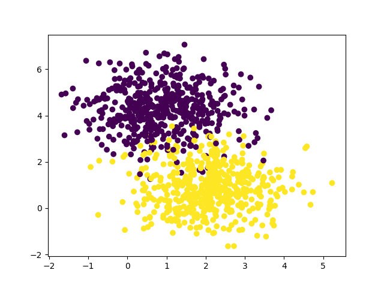
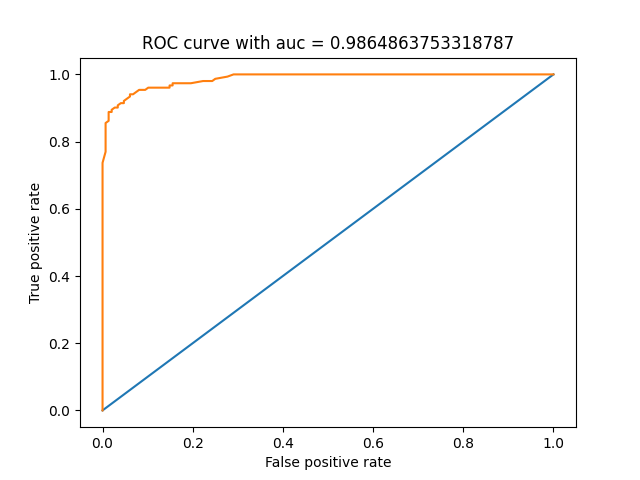

Note
Go to the end to download the full example code.
Logistic Regression on Synthetic Data with ROC Curve and AUC
This script demonstrates the use of ROC Curve for binary classification on synthetic data. The dataset is generated using make_blobs from scikit-learn to create a 2D feature space with two centers. The script then splits the dataset into training and test sets, trains a logistic regression model, and evaluates its performance using metrics such as accuracy, ROC curve, and AUC (Area Under the Curve).
- 
- 
Epoch: 1 - Metrics: {'loss': '0.4903', 'accuracy': '0.7029'}
Epoch: 11 - Metrics: {'loss': '0.4830', 'accuracy': '0.7171'}
Epoch: 21 - Metrics: {'loss': '0.4759', 'accuracy': '0.7329'}
Epoch: 31 - Metrics: {'loss': '0.4690', 'accuracy': '0.7457'}
Epoch: 41 - Metrics: {'loss': '0.4623', 'accuracy': '0.7614'}
Epoch: 51 - Metrics: {'loss': '0.4557', 'accuracy': '0.7686'}
Epoch: 61 - Metrics: {'loss': '0.4493', 'accuracy': '0.7786'}
Epoch: 71 - Metrics: {'loss': '0.4431', 'accuracy': '0.7914'}
Epoch: 81 - Metrics: {'loss': '0.4370', 'accuracy': '0.8057'}
Epoch: 91 - Metrics: {'loss': '0.4311', 'accuracy': '0.8200'}
Epoch: 101 - Metrics: {'loss': '0.4253', 'accuracy': '0.8243'}
Epoch: 111 - Metrics: {'loss': '0.4197', 'accuracy': '0.8300'}
Epoch: 121 - Metrics: {'loss': '0.4142', 'accuracy': '0.8343'}
Epoch: 131 - Metrics: {'loss': '0.4089', 'accuracy': '0.8386'}
Epoch: 141 - Metrics: {'loss': '0.4037', 'accuracy': '0.8429'}
Epoch: 151 - Metrics: {'loss': '0.3986', 'accuracy': '0.8500'}
Epoch: 161 - Metrics: {'loss': '0.3937', 'accuracy': '0.8514'}
Epoch: 171 - Metrics: {'loss': '0.3889', 'accuracy': '0.8571'}
Epoch: 181 - Metrics: {'loss': '0.3842', 'accuracy': '0.8600'}
Epoch: 191 - Metrics: {'loss': '0.3796', 'accuracy': '0.8657'}
Epoch: 201 - Metrics: {'loss': '0.3751', 'accuracy': '0.8700'}
Epoch: 211 - Metrics: {'loss': '0.3707', 'accuracy': '0.8743'}
Epoch: 221 - Metrics: {'loss': '0.3665', 'accuracy': '0.8786'}
Epoch: 231 - Metrics: {'loss': '0.3623', 'accuracy': '0.8829'}
Epoch: 241 - Metrics: {'loss': '0.3583', 'accuracy': '0.8843'}
Epoch: 251 - Metrics: {'loss': '0.3543', 'accuracy': '0.8843'}
Epoch: 261 - Metrics: {'loss': '0.3505', 'accuracy': '0.8857'}
Epoch: 271 - Metrics: {'loss': '0.3467', 'accuracy': '0.8886'}
Epoch: 281 - Metrics: {'loss': '0.3430', 'accuracy': '0.8914'}
Epoch: 291 - Metrics: {'loss': '0.3395', 'accuracy': '0.8957'}
Epoch: 301 - Metrics: {'loss': '0.3359', 'accuracy': '0.8957'}
Epoch: 311 - Metrics: {'loss': '0.3325', 'accuracy': '0.9000'}
Epoch: 321 - Metrics: {'loss': '0.3292', 'accuracy': '0.9014'}
Epoch: 331 - Metrics: {'loss': '0.3259', 'accuracy': '0.9029'}
Epoch: 341 - Metrics: {'loss': '0.3227', 'accuracy': '0.9057'}
Epoch: 351 - Metrics: {'loss': '0.3196', 'accuracy': '0.9071'}
Epoch: 361 - Metrics: {'loss': '0.3166', 'accuracy': '0.9071'}
Epoch: 371 - Metrics: {'loss': '0.3136', 'accuracy': '0.9071'}
Epoch: 381 - Metrics: {'loss': '0.3107', 'accuracy': '0.9100'}
Epoch: 391 - Metrics: {'loss': '0.3078', 'accuracy': '0.9100'}
Epoch: 401 - Metrics: {'loss': '0.3050', 'accuracy': '0.9100'}
Epoch: 411 - Metrics: {'loss': '0.3023', 'accuracy': '0.9100'}
Epoch: 421 - Metrics: {'loss': '0.2996', 'accuracy': '0.9086'}
Epoch: 431 - Metrics: {'loss': '0.2970', 'accuracy': '0.9071'}
Epoch: 441 - Metrics: {'loss': '0.2945', 'accuracy': '0.9057'}
Epoch: 451 - Metrics: {'loss': '0.2920', 'accuracy': '0.9071'}
Epoch: 461 - Metrics: {'loss': '0.2896', 'accuracy': '0.9071'}
Epoch: 471 - Metrics: {'loss': '0.2872', 'accuracy': '0.9100'}
Epoch: 481 - Metrics: {'loss': '0.2848', 'accuracy': '0.9129'}
Epoch: 491 - Metrics: {'loss': '0.2825', 'accuracy': '0.9143'}
Epoch: 501 - Metrics: {'loss': '0.2803', 'accuracy': '0.9157'}
Epoch: 511 - Metrics: {'loss': '0.2781', 'accuracy': '0.9157'}
Epoch: 521 - Metrics: {'loss': '0.2760', 'accuracy': '0.9171'}
Epoch: 531 - Metrics: {'loss': '0.2738', 'accuracy': '0.9171'}
Epoch: 541 - Metrics: {'loss': '0.2718', 'accuracy': '0.9200'}
Epoch: 551 - Metrics: {'loss': '0.2698', 'accuracy': '0.9200'}
Epoch: 561 - Metrics: {'loss': '0.2678', 'accuracy': '0.9200'}
Epoch: 571 - Metrics: {'loss': '0.2658', 'accuracy': '0.9200'}
Epoch: 581 - Metrics: {'loss': '0.2639', 'accuracy': '0.9214'}
Epoch: 591 - Metrics: {'loss': '0.2621', 'accuracy': '0.9214'}
Epoch: 601 - Metrics: {'loss': '0.2602', 'accuracy': '0.9229'}
Epoch: 611 - Metrics: {'loss': '0.2584', 'accuracy': '0.9229'}
Epoch: 621 - Metrics: {'loss': '0.2567', 'accuracy': '0.9229'}
Epoch: 631 - Metrics: {'loss': '0.2550', 'accuracy': '0.9229'}
Epoch: 641 - Metrics: {'loss': '0.2533', 'accuracy': '0.9229'}
Epoch: 651 - Metrics: {'loss': '0.2516', 'accuracy': '0.9243'}
Epoch: 661 - Metrics: {'loss': '0.2500', 'accuracy': '0.9243'}
Epoch: 671 - Metrics: {'loss': '0.2484', 'accuracy': '0.9243'}
Epoch: 681 - Metrics: {'loss': '0.2468', 'accuracy': '0.9257'}
Epoch: 691 - Metrics: {'loss': '0.2453', 'accuracy': '0.9243'}
Epoch: 701 - Metrics: {'loss': '0.2438', 'accuracy': '0.9229'}
Epoch: 711 - Metrics: {'loss': '0.2423', 'accuracy': '0.9229'}
Epoch: 721 - Metrics: {'loss': '0.2408', 'accuracy': '0.9229'}
Epoch: 731 - Metrics: {'loss': '0.2394', 'accuracy': '0.9229'}
Epoch: 741 - Metrics: {'loss': '0.2380', 'accuracy': '0.9229'}
Epoch: 751 - Metrics: {'loss': '0.2366', 'accuracy': '0.9257'}
Epoch: 761 - Metrics: {'loss': '0.2352', 'accuracy': '0.9257'}
Epoch: 771 - Metrics: {'loss': '0.2339', 'accuracy': '0.9286'}
Epoch: 781 - Metrics: {'loss': '0.2326', 'accuracy': '0.9286'}
Epoch: 791 - Metrics: {'loss': '0.2313', 'accuracy': '0.9286'}
Epoch: 801 - Metrics: {'loss': '0.2300', 'accuracy': '0.9286'}
Epoch: 811 - Metrics: {'loss': '0.2288', 'accuracy': '0.9286'}
Epoch: 821 - Metrics: {'loss': '0.2276', 'accuracy': '0.9286'}
Epoch: 831 - Metrics: {'loss': '0.2264', 'accuracy': '0.9314'}
Epoch: 841 - Metrics: {'loss': '0.2252', 'accuracy': '0.9343'}
Epoch: 851 - Metrics: {'loss': '0.2240', 'accuracy': '0.9343'}
Epoch: 861 - Metrics: {'loss': '0.2229', 'accuracy': '0.9343'}
Epoch: 871 - Metrics: {'loss': '0.2218', 'accuracy': '0.9343'}
Epoch: 881 - Metrics: {'loss': '0.2207', 'accuracy': '0.9343'}
Epoch: 891 - Metrics: {'loss': '0.2196', 'accuracy': '0.9343'}
Epoch: 901 - Metrics: {'loss': '0.2185', 'accuracy': '0.9343'}
Epoch: 911 - Metrics: {'loss': '0.2175', 'accuracy': '0.9343'}
Epoch: 921 - Metrics: {'loss': '0.2164', 'accuracy': '0.9343'}
Epoch: 931 - Metrics: {'loss': '0.2154', 'accuracy': '0.9357'}
Epoch: 941 - Metrics: {'loss': '0.2144', 'accuracy': '0.9357'}
Epoch: 951 - Metrics: {'loss': '0.2134', 'accuracy': '0.9357'}
Epoch: 961 - Metrics: {'loss': '0.2125', 'accuracy': '0.9357'}
Epoch: 971 - Metrics: {'loss': '0.2115', 'accuracy': '0.9357'}
Epoch: 981 - Metrics: {'loss': '0.2106', 'accuracy': '0.9357'}
Epoch: 991 - Metrics: {'loss': '0.2096', 'accuracy': '0.9357'}
Epoch: 1001 - Metrics: {'loss': '0.2087', 'accuracy': '0.9357'}
Epoch: 1011 - Metrics: {'loss': '0.2078', 'accuracy': '0.9357'}
Epoch: 1021 - Metrics: {'loss': '0.2069', 'accuracy': '0.9357'}
Epoch: 1031 - Metrics: {'loss': '0.2061', 'accuracy': '0.9357'}
Epoch: 1041 - Metrics: {'loss': '0.2052', 'accuracy': '0.9357'}
Epoch: 1051 - Metrics: {'loss': '0.2044', 'accuracy': '0.9371'}
Epoch: 1061 - Metrics: {'loss': '0.2035', 'accuracy': '0.9371'}
Epoch: 1071 - Metrics: {'loss': '0.2027', 'accuracy': '0.9371'}
Epoch: 1081 - Metrics: {'loss': '0.2019', 'accuracy': '0.9371'}
Epoch: 1091 - Metrics: {'loss': '0.2011', 'accuracy': '0.9371'}
Epoch: 1101 - Metrics: {'loss': '0.2003', 'accuracy': '0.9386'}
Epoch: 1111 - Metrics: {'loss': '0.1995', 'accuracy': '0.9386'}
Epoch: 1121 - Metrics: {'loss': '0.1988', 'accuracy': '0.9400'}
Epoch: 1131 - Metrics: {'loss': '0.1980', 'accuracy': '0.9400'}
Epoch: 1141 - Metrics: {'loss': '0.1973', 'accuracy': '0.9414'}
Epoch: 1151 - Metrics: {'loss': '0.1966', 'accuracy': '0.9414'}
Epoch: 1161 - Metrics: {'loss': '0.1958', 'accuracy': '0.9414'}
Epoch: 1171 - Metrics: {'loss': '0.1951', 'accuracy': '0.9414'}
Epoch: 1181 - Metrics: {'loss': '0.1944', 'accuracy': '0.9414'}
Epoch: 1191 - Metrics: {'loss': '0.1937', 'accuracy': '0.9414'}
Epoch: 1201 - Metrics: {'loss': '0.1931', 'accuracy': '0.9414'}
Epoch: 1211 - Metrics: {'loss': '0.1924', 'accuracy': '0.9414'}
Epoch: 1221 - Metrics: {'loss': '0.1917', 'accuracy': '0.9414'}
Epoch: 1231 - Metrics: {'loss': '0.1911', 'accuracy': '0.9414'}
Epoch: 1241 - Metrics: {'loss': '0.1904', 'accuracy': '0.9414'}
Epoch: 1251 - Metrics: {'loss': '0.1898', 'accuracy': '0.9414'}
Epoch: 1261 - Metrics: {'loss': '0.1892', 'accuracy': '0.9414'}
Epoch: 1271 - Metrics: {'loss': '0.1885', 'accuracy': '0.9414'}
Epoch: 1281 - Metrics: {'loss': '0.1879', 'accuracy': '0.9414'}
Epoch: 1291 - Metrics: {'loss': '0.1873', 'accuracy': '0.9414'}
Epoch: 1301 - Metrics: {'loss': '0.1867', 'accuracy': '0.9429'}
Epoch: 1311 - Metrics: {'loss': '0.1861', 'accuracy': '0.9429'}
Epoch: 1321 - Metrics: {'loss': '0.1856', 'accuracy': '0.9429'}
Epoch: 1331 - Metrics: {'loss': '0.1850', 'accuracy': '0.9429'}
Epoch: 1341 - Metrics: {'loss': '0.1844', 'accuracy': '0.9429'}
Epoch: 1351 - Metrics: {'loss': '0.1839', 'accuracy': '0.9429'}
Epoch: 1361 - Metrics: {'loss': '0.1833', 'accuracy': '0.9429'}
Epoch: 1371 - Metrics: {'loss': '0.1828', 'accuracy': '0.9429'}
Epoch: 1381 - Metrics: {'loss': '0.1822', 'accuracy': '0.9429'}
Epoch: 1391 - Metrics: {'loss': '0.1817', 'accuracy': '0.9429'}
Epoch: 1401 - Metrics: {'loss': '0.1812', 'accuracy': '0.9429'}
Epoch: 1411 - Metrics: {'loss': '0.1806', 'accuracy': '0.9414'}
Epoch: 1421 - Metrics: {'loss': '0.1801', 'accuracy': '0.9414'}
Epoch: 1431 - Metrics: {'loss': '0.1796', 'accuracy': '0.9414'}
Epoch: 1441 - Metrics: {'loss': '0.1791', 'accuracy': '0.9414'}
Epoch: 1451 - Metrics: {'loss': '0.1786', 'accuracy': '0.9414'}
Epoch: 1461 - Metrics: {'loss': '0.1782', 'accuracy': '0.9414'}
Epoch: 1471 - Metrics: {'loss': '0.1777', 'accuracy': '0.9414'}
Epoch: 1481 - Metrics: {'loss': '0.1772', 'accuracy': '0.9414'}
Epoch: 1491 - Metrics: {'loss': '0.1767', 'accuracy': '0.9414'}
Epoch: 1501 - Metrics: {'loss': '0.1763', 'accuracy': '0.9414'}
Epoch: 1511 - Metrics: {'loss': '0.1758', 'accuracy': '0.9414'}
Epoch: 1521 - Metrics: {'loss': '0.1753', 'accuracy': '0.9429'}
Epoch: 1531 - Metrics: {'loss': '0.1749', 'accuracy': '0.9429'}
Epoch: 1541 - Metrics: {'loss': '0.1745', 'accuracy': '0.9429'}
Epoch: 1551 - Metrics: {'loss': '0.1740', 'accuracy': '0.9429'}
Epoch: 1561 - Metrics: {'loss': '0.1736', 'accuracy': '0.9414'}
Epoch: 1571 - Metrics: {'loss': '0.1732', 'accuracy': '0.9414'}
Epoch: 1581 - Metrics: {'loss': '0.1727', 'accuracy': '0.9414'}
Epoch: 1591 - Metrics: {'loss': '0.1723', 'accuracy': '0.9414'}
Epoch: 1601 - Metrics: {'loss': '0.1719', 'accuracy': '0.9414'}
Epoch: 1611 - Metrics: {'loss': '0.1715', 'accuracy': '0.9414'}
Epoch: 1621 - Metrics: {'loss': '0.1711', 'accuracy': '0.9414'}
Epoch: 1631 - Metrics: {'loss': '0.1707', 'accuracy': '0.9414'}
Epoch: 1641 - Metrics: {'loss': '0.1703', 'accuracy': '0.9414'}
Epoch: 1651 - Metrics: {'loss': '0.1699', 'accuracy': '0.9414'}
Epoch: 1661 - Metrics: {'loss': '0.1695', 'accuracy': '0.9414'}
Epoch: 1671 - Metrics: {'loss': '0.1691', 'accuracy': '0.9414'}
Epoch: 1681 - Metrics: {'loss': '0.1687', 'accuracy': '0.9414'}
Epoch: 1691 - Metrics: {'loss': '0.1684', 'accuracy': '0.9414'}
Epoch: 1701 - Metrics: {'loss': '0.1680', 'accuracy': '0.9414'}
Epoch: 1711 - Metrics: {'loss': '0.1676', 'accuracy': '0.9414'}
Epoch: 1721 - Metrics: {'loss': '0.1673', 'accuracy': '0.9414'}
Epoch: 1731 - Metrics: {'loss': '0.1669', 'accuracy': '0.9414'}
Epoch: 1741 - Metrics: {'loss': '0.1666', 'accuracy': '0.9414'}
Epoch: 1751 - Metrics: {'loss': '0.1662', 'accuracy': '0.9414'}
Epoch: 1761 - Metrics: {'loss': '0.1659', 'accuracy': '0.9414'}
Epoch: 1771 - Metrics: {'loss': '0.1655', 'accuracy': '0.9414'}
Epoch: 1781 - Metrics: {'loss': '0.1652', 'accuracy': '0.9414'}
Epoch: 1791 - Metrics: {'loss': '0.1648', 'accuracy': '0.9414'}
Epoch: 1801 - Metrics: {'loss': '0.1645', 'accuracy': '0.9414'}
Epoch: 1811 - Metrics: {'loss': '0.1642', 'accuracy': '0.9414'}
Epoch: 1821 - Metrics: {'loss': '0.1638', 'accuracy': '0.9414'}
Epoch: 1831 - Metrics: {'loss': '0.1635', 'accuracy': '0.9414'}
Epoch: 1841 - Metrics: {'loss': '0.1632', 'accuracy': '0.9414'}
Epoch: 1851 - Metrics: {'loss': '0.1629', 'accuracy': '0.9429'}
Epoch: 1861 - Metrics: {'loss': '0.1626', 'accuracy': '0.9429'}
Epoch: 1871 - Metrics: {'loss': '0.1622', 'accuracy': '0.9429'}
Epoch: 1881 - Metrics: {'loss': '0.1619', 'accuracy': '0.9429'}
Epoch: 1891 - Metrics: {'loss': '0.1616', 'accuracy': '0.9429'}
Epoch: 1901 - Metrics: {'loss': '0.1613', 'accuracy': '0.9443'}
Epoch: 1911 - Metrics: {'loss': '0.1610', 'accuracy': '0.9457'}
Epoch: 1921 - Metrics: {'loss': '0.1607', 'accuracy': '0.9457'}
Epoch: 1931 - Metrics: {'loss': '0.1604', 'accuracy': '0.9457'}
Epoch: 1941 - Metrics: {'loss': '0.1602', 'accuracy': '0.9457'}
Epoch: 1951 - Metrics: {'loss': '0.1599', 'accuracy': '0.9457'}
Epoch: 1961 - Metrics: {'loss': '0.1596', 'accuracy': '0.9457'}
Epoch: 1971 - Metrics: {'loss': '0.1593', 'accuracy': '0.9457'}
Epoch: 1981 - Metrics: {'loss': '0.1590', 'accuracy': '0.9457'}
Epoch: 1991 - Metrics: {'loss': '0.1587', 'accuracy': '0.9471'}
tensor([0.1327, 0.9785, 0.0120, 0.3691, 0.0592, 0.1620, 0.8301, 0.0042, 0.8785,
0.0011]) tensor([0, 1, 0, 0, 0, 0, 1, 0, 1, 0], dtype=torch.int32)
0.9366666674613953
0.9864864945411682
import torch
from sklearn import datasets
from sklearn.metrics import auc as sk_auc
import matplotlib.pyplot as plt
import numpy as np
from DLL.MachineLearning.SupervisedLearning.LinearModels import LogisticRegression
from DLL.Data.Preprocessing import data_split
from DLL.Data.Metrics import accuracy, roc_curve, auc
np.random.seed(0)
X, y = datasets.make_blobs(n_features=2, n_samples=1000, centers=2)
plt.scatter(X[:, 0], X[:, 1], c=y)
x_train, y_train, _, _, x_test, y_test = data_split(torch.from_numpy(X).to(dtype=torch.float32), torch.from_numpy(y), train_split=0.7, validation_split=0.0)
model = LogisticRegression(learning_rate=0.001)
model.fit(x_train, y_train, epochs=2000, metrics=["loss", "accuracy"], callback_frequency=10, verbose=True)
y_pred = model.predict_proba(x_test)
print(y_pred[:10], y_test[:10])
print(accuracy(y_pred, y_test))
thresholds = torch.linspace(0, 1, 100)
fpr, tpr = roc_curve(y_pred, y_test, thresholds)
plt.figure()
plt.title(f"ROC curve with auc = {auc(fpr, tpr)}")
print(sk_auc(fpr, tpr))
plt.plot([0, 1], [0, 1])
plt.plot(fpr, tpr)
plt.xlabel("False positive rate")
plt.ylabel("True positive rate")
plt.show()
Total running time of the script: (0 minutes 5.338 seconds)